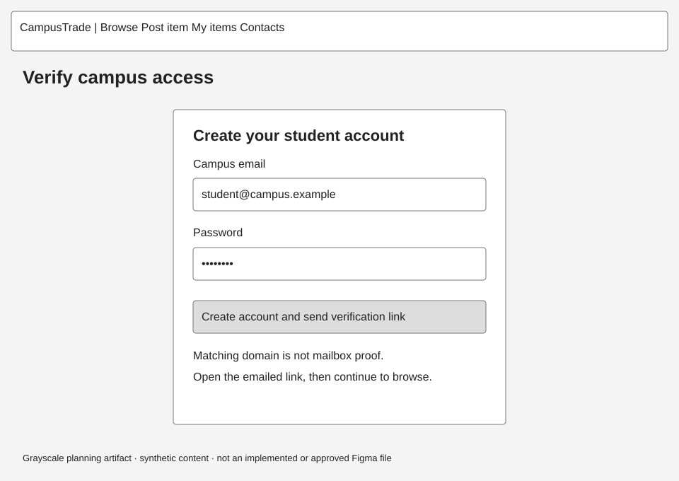
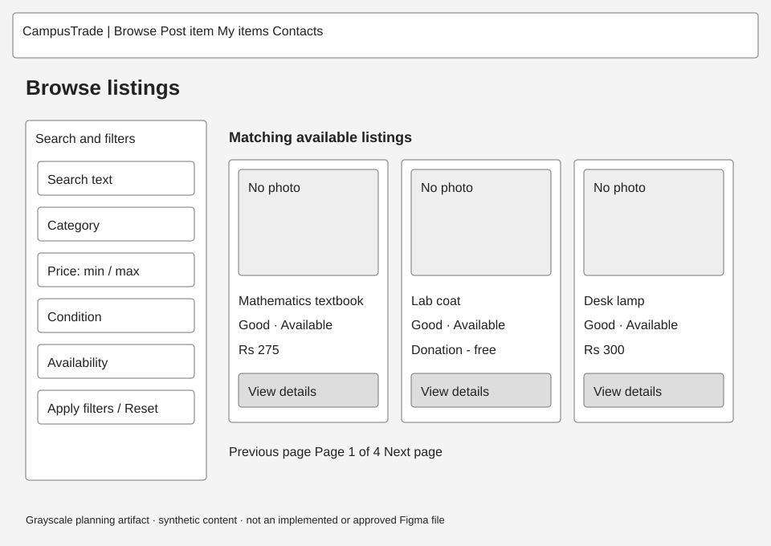
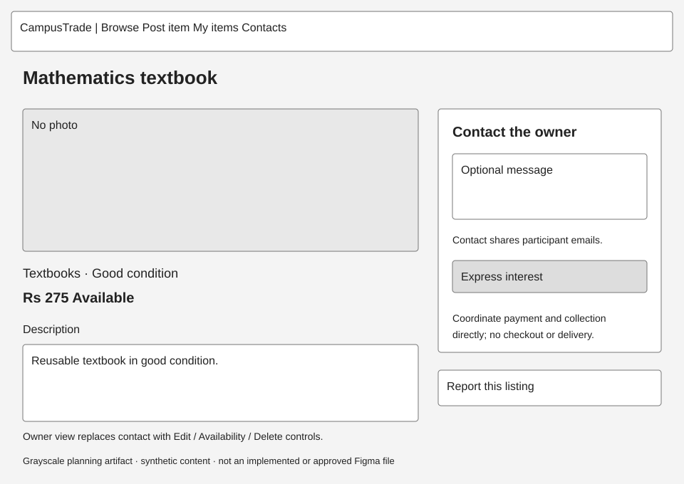
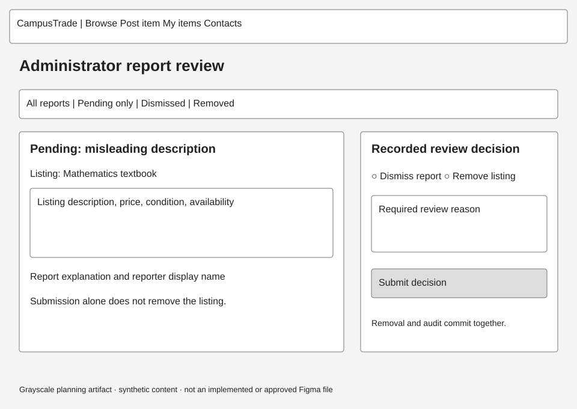

1. Campus verification

2. Discover an item

3. Listing detail

Interest recorded
The application would persist participant-only contact details and show notification status separately. Arrange payment and collection directly with the owner.
Report submitted
A reviewer must decide. The listing stays visible while the report is pending.
4. Review the report

Listing removed after review
The application would record the decision and audit event atomically. Removed content cannot appear in discovery, be contacted or be republished through owner edits.